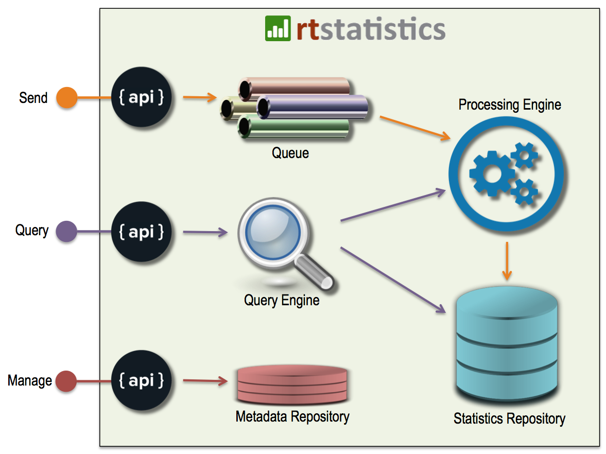

The REAL real-time statistics for big data
Nowadays data is being generated and collected at the speed that we haven’t even imagined before. But we as human can only consume them at a very low speed. That’s why we always demand the data to be aggregated, summarized, and visualized.
Traditional technologies have been providing us the capability to query aggregated numbers for decades, but with delays in terms of both data immediacy and query response time when the dataset size is large. They were not created for big data after all.
We are providing something new. It is able to ingest massive number of data records coming in real-time. Query results are returned typically within 1 second disregarding the size of the original dataset. As to immediacy, the delay is within 1 second.
SaaS
We provide real-time statistics capabilities as a service through REST APIs. The management console (https://manage.rtstatistics.com) and the APIs (https://api.rtstatistics.com) are open to everyone. You don’t need to pay unless you have more than 100K data items per month.
For customers with special needs, it is also possible to have the software installed on premises. Please contact us if you are interested.
Technical architecture
Below is the high level technical architecture used in rtstatistics.com:

- API layer exposes all the functions
- The Queue keeps data to be processed, and support re-processing after fail-recover
- Processing Engine does the computation
- Statistics Repository keeps statistics results
- Query Engine provides query service for both real-time statistics and historical statistics
- Metadata Repository keeps user defined metadata
Key features
✧ Updating statistics in real-time
The key difference that distinguishes rtstatistics.com from other systems is that rtstatistics.com provides real real-time statistics. The delay is not measured in minutes or even seconds. It is actually within 1 second in rtstatistics.com. For example, if a transaction data is received at 8:45:21 for a $100 order, and the manager refreshes the dashboard one second later at 8:45:22, she/he will see that $100 reflected in the total order amount. With this real real-time statistics capability, businesses can gain advantages in competition and may even discover new applications that is thought to be impossible before.
✧ Instant response to queries
rtstatistics.com has excellent performance and scalability on queries. Even without using cache, generally a query can be finished within one second, and each statistics result can be queried concurrently by nearly 1000 users without downgrading the performance. Not only this provides better user experience, it also means our customers do not need to worry about caching and resource management on their end.
✧ Receiving massive amount of data in real-time
Data can be pushed to rtstatistics.com in real-time through HTTPS based REST API. It works well with Firewalls and NAT, and is very secure. By utilizing latest cloud technologies, rtstatistics.com can scale up to cope with any practical work load. No matter where the data comes from, what the push frequency is, and how high the concurrency is, rtstatistics.com always allows you to send your data to it in real-time.
✧ Easy to customize and integrate
rtstatistics.com provides capabilities around real-time statistics. It does not put any constraint on what you can do with it. You can customize the definition of fields and how statistics shall be done with those fields. This makes it really easy for anyone to integrate real-time statistics capabilities with any business logic. There is no need to do ETL or data transformation. Everything can be done through REST APIs – data ingestion, fields definition, statistics definition, and query. The input and output data format is JSON. There are even open source libraries for transforming query output into formats required by popular chart libraries like c3.js/d3.js, and Google Charts.
For typical applications, please see: Solutions.
✧ Native support for different time zones
Do you know that some in some places the offset between local time and UTC/GMT has a 30 minutes or even 15 minutes part? Do you know that there may be a hour missing when the daylight saving starts in some places? We know. We also know that probably you want your business to cover every corner in the world. That’s why we provide native time zone support, rather than just adding or subtracting a few hours on top of UTC/GMT time as many others do. For the full list of time zones supported, please see: Supported time zones.
✧ Customizable timestamp
In rtstatistics.com all data items have a timestamp associated with them. By default, data items are timestamped based on their arrival time. However, many applications require using the exact timestamp that an event occurred, rather than the arrival time. For example, in a Point of Sales application one may need event timestamps corresponding to the time a payment was logged, rather than the time a payment event is received. That’s why rtstatistics.com allows specifying custom timestamp values. The value can be in any field from the data items received.
Get started
To experience what can be done with the real-time statistics capabilities, please check out these demo pages listed below. All of them use real life data.
- Live statistics: Trump vs. Clinton according to comments in “askreddit”
- Live statistics: Usage of mobile app “LibBooks”
To have a try using your own data, you may find these tutorials useful:
- Tutorial: How to send data to rtstatistics.com in 5 minutes
- Tutorial: How to setup real-time statistics in 5 minutes
If you have any questions or suggestions, please send email to info@rtstatistics.com.